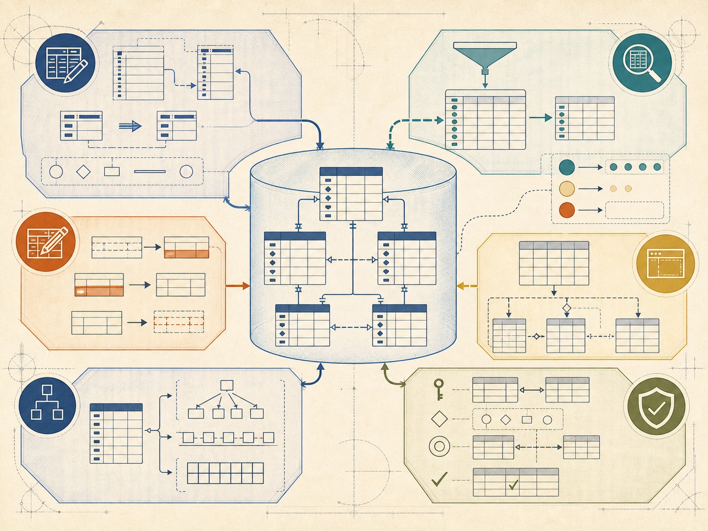

SQL 标准
提供共同的语法与语义基础

需要哪些列、满足哪些条件，其他交给 DBMS
 VER. 2608
Built with impress.js
VER. 2608
Built with impress.js
判断 SQL 操作的目的，并理解用户与 DBMS 的分工
形成共同语言基础
SEQUEL（/ˈsiːkwəl/）→ System R 实现 → 改名为 SQL → ANSI / ISO 标准
| 节点 | 事件 | 意义 |
|---|---|---|
| 1974 | Boyce 与 Chamberlin 提出 SEQUEL | 关系数据库语言的原型 |
| System R | IBM 关系数据库原型实现 SEQUEL | 从研究走向系统 |
| 后来 | 名称简化为 SQL（读作 S、Q、L） | 形成延续至今的共同称呼 |
| 1986—1987 | ANSI 与 ISO 相继通过标准 | 形成共同语言基础 |
阅读一条 SQL 命令时，先看 DBMS
提供共同的语法与语义基础
通常只实现标准的一个子集，支持范围和数据类型也可能不同
在标准之上加入扩展、限制或不同的语法行为
遇到产品命令时，判断它是否属于标准、当前 DBMS 是否实现或属于厂商扩展；记录产品与版本，并查阅产品手册
授权：谁能执行哪些操作

建立和改变数据库对象，例如模式与基本表
从关系中得到结果，例如学生姓名与成绩集合
插入、修改和删除一组元组，改变关系实例
限制谁能做什么，并维护完整性与并发边界
不同 DBMS 支持的数据类型、命令和扩展可能不同
用户说明逻辑对象、属性和条件；DBMS 决定执行路径
| 请求方式 | 用户需要说明 | 系统负责什么 |
|---|---|---|
| 过程化访问方式 | 访问路径、处理顺序和循环 | 用户自己组织访问过程 |
| SQL 非过程化 | 目标关系、属性和条件 | RDBMS 规划路径并执行 |
案例：查询选某门课程的学生信息。用户指定逻辑对象、目标属性和条件，不指定扫描哪个文件、使用哪条索引或如何循环
执行路径的选择交给 DBMS；这可以看成是物理独立性的体现
先看输入集合、命中集合和结果，再判断系统内部采用什么执行步骤
| 请求 | 作用对象 | 可观察结果 |
|---|---|---|
| 查询选修某课的学生 | SC 中满足条件的元组集合 | 一个结果关系 |
| 把某课成绩统一加分 | 命中的多条选课记录 | 一次请求改变一组元组 |
| 删除已取消的选课 | 状态为“已取消”的记录集合 | 查询命中的集合被移除 |
DBMS 内部仍可能逐行处理或通过索引找到这些记录
SQL 可独立执行，也可通过接口或嵌入机制使用
用户在交互环境（如 MySQL Workbench 或终端）中直接输入 SQL 命令操作数据库
Java、Python 程序通常通过驱动或 API 把 SQL 请求发送给 DBMS
由预编译器或特定机制把 SQL 写入高级语言程序
接口形式可以不同，但核心 SQL 语句结构基本一致
创建对象、返回结果、改变记录、改变用户权限
| 功能 | 核心动词 | 请求产生的结果 |
|---|---|---|
| 数据定义 | CREATE、DROP、ALTER | 创建或改变模式、表、视图、索引等对象 |
| 数据查询 | SELECT | 返回结果关系，不改变基本表 |
| 数据操纵 | INSERT、UPDATE、DELETE | 改变关系中的元组集合 |
| 数据控制 | GRANT、REVOKE | 改变用户对对象和操作的权限 |
重点是创建、返回或改变了什么
用户通过基本表和视图使用逻辑数据，DBMS 管理内部存储

| 层次 | SQL 中的对应 | 层次作用 |
|---|---|---|
| 外模式 | 视图和部分基本表 | 面向角色的局部逻辑结构 |
| 模式 | 基本表 | 数据库的全局逻辑结构 |
| 内模式 | 存储文件、索引及物理结构 | DBMS 管理的存储组织 |
基本表与存储文件并非一一对应；索引由用户或 DBA 定义、由 DBMS 维护
用户可以把普通视图当作关系使用，但查询结果仍来自基础对象
Student、Course、SC 是模式中的逻辑关系对象，数据由 DBMS 持久化管理
“教师所授课程成绩”保存查询定义，使用时从基础对象生成当前结果
当 SC 中的成绩改变后，再查询普通视图会得到新结果，而不需要复制并同步另一张结果表
后续每一节都把一种数据库任务写成可执行 SQL
模式、表、索引与数据字典
单表、连接、嵌套、集合与派生表
插入、修改与删除
判断与三值逻辑
定义、查询、更新与作用
任务：客服要查询某次申诉涉及的玩家、道具和处理状态
指出它属于定义、查询、操纵还是控制，并说明会生成结果还是改变数据库状态
写出需要的逻辑对象、目标属性和筛选条件，预测结果关系的每个元组代表什么
指出用户负责说明什么、DBMS 负责选择什么，并标出标准/方言需要核查的位置
这是什么类型的操作、需要哪些表列和条件、每行结果代表什么
SC 的物理文件和索引改变后，为什么面向基本表或普通视图的逻辑查询通常可以保持稳定？